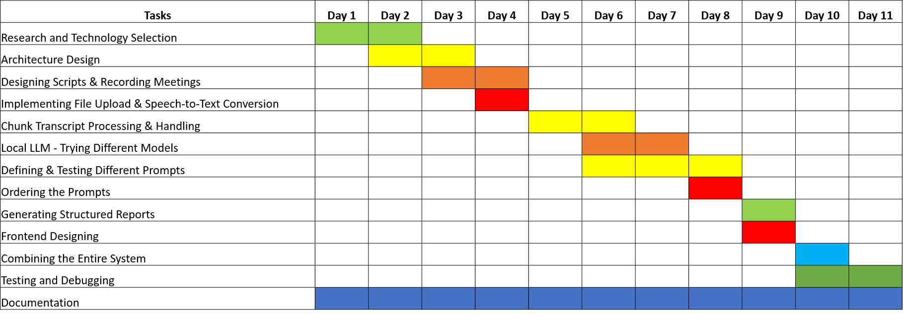
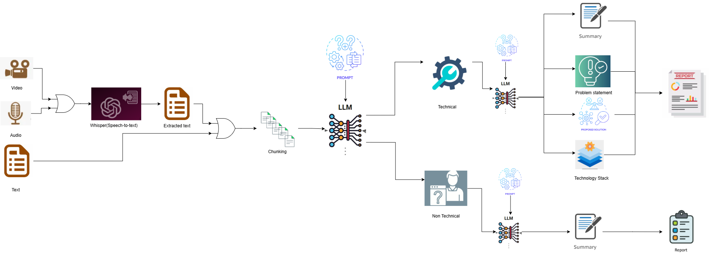
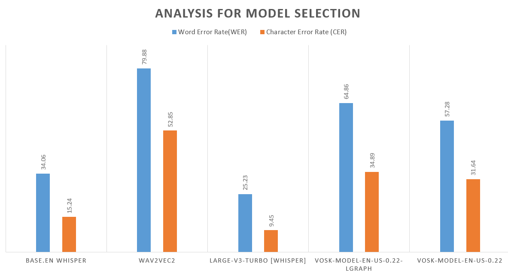

In the business world, meetings are a cornerstone for discussing requirements, plans, and roadmaps. Post-meeting, there is often a need for internal discussions within organizations like TCS to process the outcomes effectively. Key tasks include identifying problem statements, designing solutions, recommending technology stacks, and summarizing key points and action items. The challenge lies in automating this process to reduce manual effort, improve accuracy, and ensure actionable insights are captured systematically.
The expected result is a user-friendly UI interface where users can upload a video or transcript of a meeting. The solution should generate a detailed report, including a summary, identified problem statements, proposed solution designs, and recommended technology stacks.
| Team Member | Contribution | Milestone Achieved |
|---|---|---|
| Shreesha B | - Research and Technology Selection - Local LLM experiments - Chunk Handling - Prompt Engineering - Recording Meetings - Structured report generation - Testing and debugging |
- Completed Research and Technology Selection (Day 2) - Selected best LLM model (Day 7) - Generated structured reports (Day 9) - System tested and debugged (Day 11) |
| Ojas Soni | - Research and Technology Selection - Implementing File Upload and Speech-to-Text Conversion - Designing Scripts - Recording Meetings - Prompt Engineering - Testing and debugging |
- Completed Research and Technology Selection (Day 2) - Implemented Speech-to-Text feature (Day 5) - System tested and debugged (Day 11) |
| Sree Nidhi L | - Research and Technology Selection - Architecture Design - Recording Meetings - Frontend Designing - Prompt Engineering - Documentation - System Integration |
- Completed Research and Technology Selection (Day 2) - Designed architecture (Day 3) - Completed frontend design (Day 10) - Integrated entire system (Day 11) |
 Figure: Project timeline spanning 11 days.
 Figure: Workflow for text extraction and report generation.
The architecture diagram illustrates the end-to-end workflow of the Intelligent Assistant for Solution Design. Below is a detailed breakdown of the components and flow:
Input Layer:
Transcription Layer:
base.en) is used to transcribe audio or video files into text. If a text file is uploaded, it is directly processed.Text Processing Layer:
Meeting Classification:
Information Extraction:
Report Generation:
Output Layer:
report.md).report.pdf).base.en for Transcription?The choice of Whisper base.en for transcription was informed by the analysis in the obtained graph. The graph compares various models (BASE.EN WHISPER, WAV2VEC2, LARGE-V3-TURBO [WHISPER], VOSK-MODEL-EN-US-0.22-LGRAPH, VOSK-MODEL-EN-US-0.22) on Word Error Rate (WER) and Character Error Rate (CER). BASE.EN WHISPER achieved a WER of 34.06 and a CER of 15.24, which are competitive compared to larger models like LARGE-V3-TURBO (WER: 64.86, CER: 34.45) while requiring significantly fewer computational resources. Since the project prioritizes efficiency on varied hardware (including CPU setups), base.en provides a balanced trade-off between accuracy and resource usage, making it ideal for this application.
 Figure: Comparison of Word Error Rate (WER) and Character Error Rate (CER) for different models.
Qwen2.5, developed by Alibaba Cloud, was selected as the language model for this project due to its strong performance in natural language understanding and generation, particularly for structured tasks like information extraction and report generation. The 7B model (or 3B for CPU) offers a good balance of capability and efficiency, making it suitable for processing large meeting transcripts while maintaining high-quality output. Qwen2.5 excels in handling long contexts (up to 8192 tokens in this setup) and following complex prompts, which is critical for extracting nuanced information like problem statements and solution designs. Additionally, its open-source availability via Ollama ensures accessibility and ease of deployment, aligning with the project's goal of creating a scalable and maintainable solution.
Install FFmpeg:
brew install ffmpegsudo apt-get install ffmpegffmpeg -versionInstall Python Dependencies: Create a virtual environment (optional but recommended):
python -m venv venv
source venv/bin/activate # On Windows: venv\Scripts\activate
Install required packages:
pip install ffmpeg-python openai-whisper torch ollama gradio mdpdf
Install and Configure Ollama:
ollama pull qwen2.5ollama pull qwen2.5:3bollama list (should show qwen2.5 or qwen2.5:3b).Verify Whisper Installation:
Whisper is installed via openai-whisper. The base.en model will be automatically downloaded on first use.
mkdir intelligent-assistant
cd intelligent-assistant
app.py in the project directory.python app.py
http://127.0.0.1:7860).The code is structured to handle the entire workflow from file input to report generation. Below is a detailed breakdown of the key components and functions:
import gradio as gr
import whisper
import ollama
import os
import torch
import re
import subprocess
from pathlib import Path
import shutil
device = "cuda" if torch.cuda.is_available() else "cpu"
whisper_model = whisper.load_model("base.en", device=device)
base.en model accordingly.transcribe_file)def transcribe_file(file, progress=gr.Progress()):
progress(0, desc="Starting transcription...")
try:
if file.name.endswith('.txt'):
with open(file.name, 'r', encoding='utf-8') as f:
transcript = f.read()
elif file.name.endswith(('.mp4', '.webm', '.mp3')):
progress(0.2, desc="Transcribing audio/video...")
result = whisper_model.transcribe(file.name, fp16=(device == "cuda"))
transcript = result["text"]
else:
raise ValueError("Unsupported file type...")
transcript = re.sub(r'\s+', ' ', transcript).strip()
filler_words = r'\b(um|uh|like|you know|so|basically)\b'
transcript = re.sub(filler_words, '', transcript, flags=re.IGNORECASE)
transcript = re.sub(r'\s+', ' ', transcript).strip()
return transcript
except Exception as e:
raise Exception(f"Transcription error: {str(e)}")
.txt, .mp4, .webm, and .mp3 files.chunk_transcript)def chunk_transcript(transcript, chunk_size=4000, overlap=1000, progress=gr.Progress()):
words = transcript.split()
chunks = []
start = 0
total_chunks = max(1, (len(words) // (chunk_size - overlap)) + 1)
for i in range(total_chunks):
end = min(start + chunk_size, len(words))
chunk = ' '.join(words[start:end])
if chunk.strip():
chunks.append(chunk)
start = end - overlap if end < len(words) else len(words)
progress((i + 1) / total_chunks, desc=f"Chunk {i + 1} of {total_chunks} created.")
return chunks
process_with_ollama)def process_with_ollama(prompt, num_predict=8192, num_ctx=8192, progress=gr.Progress()):
try:
response = ollama.generate(
model="qwen2.5",
prompt=prompt,
options={"num_predict": num_predict, "num_ctx": num_ctx}
)
return response.get('response', '').strip()
except Exception as e:
raise Exception(f"Ollama processing error: {str(e)}")
num_predict) and context size (num_ctx).generate_report)def generate_report(file, progress=gr.Progress()):
transcript = transcribe_file(file, progress)
chunks = chunk_transcript(transcript, progress=progress)
classification = process_with_ollama(classification_prompt.format(chunk=chunks[0]), ...)
meeting_type = classification.strip().lower()
extracted_chunks = []
for chunk in chunks:
if meeting_type == "technical":
extracted_chunk = process_with_ollama(technical_extract_prompt.format(chunk=chunk), ...)
else:
extracted_chunk = process_with_ollama(non_technical_extract_prompt.format(chunk=chunk), ...)
extracted_chunks.append(extracted_chunk)
combined_chunks = combine_chunks(extracted_chunks)
if meeting_type == "technical":
report_md = process_with_ollama(technical_report_prompt.format(combined_chunks=combined_chunks), ...)
else:
report_md = process_with_ollama(non_technical_report_prompt.format(combined_chunks=combined_chunks), ...)
md_path = save_markdown_report(report_md, progress)
pdf_path = convert_md_to_pdf(md_path, progress)
return report_md, md_path, pdf_path
with gr.Blocks(title="Intelligent Assistant for Solution Design") as app:
gr.Markdown("# Intelligent Assistant for Solution Design")
file_input = gr.File(label="Upload Video, Audio, or Transcript", file_types=[".mp4", ".webm", ".mp3", ".txt"])
generate_btn = gr.Button("Generate Report", variant="primary")
report_output = gr.Markdown(label="Generated Report")
md_output = gr.File(label="Download Report as Markdown (.md)")
pdf_output = gr.File(label="Download Report as PDF (.pdf)")
generate_btn.click(fn=generate_report, inputs=file_input, outputs=[report_output, md_output, pdf_output])
app.launch(share=True)
mdpdf is not installed.base.en: Chosen for its balance of accuracy and efficiency, as discussed earlier.base.en): For audio/video transcription, chosen for its efficiency and accuracy.mdpdf to be installed, which may not be available on all systems.medium.en) for better accuracy if hardware constraints are alleviated.The Intelligent Assistant for Solution Design addresses the challenge of post-meeting analysis by automating the extraction of key insights and generating detailed reports. By leveraging Whisper for transcription, Qwen2.5 for language processing, and Gradio for the user interface, the solution provides a robust and user-friendly tool for business professionals. While there are challenges related to hardware constraints and transcript quality, the system offers a solid foundation for further enhancements and scalability.